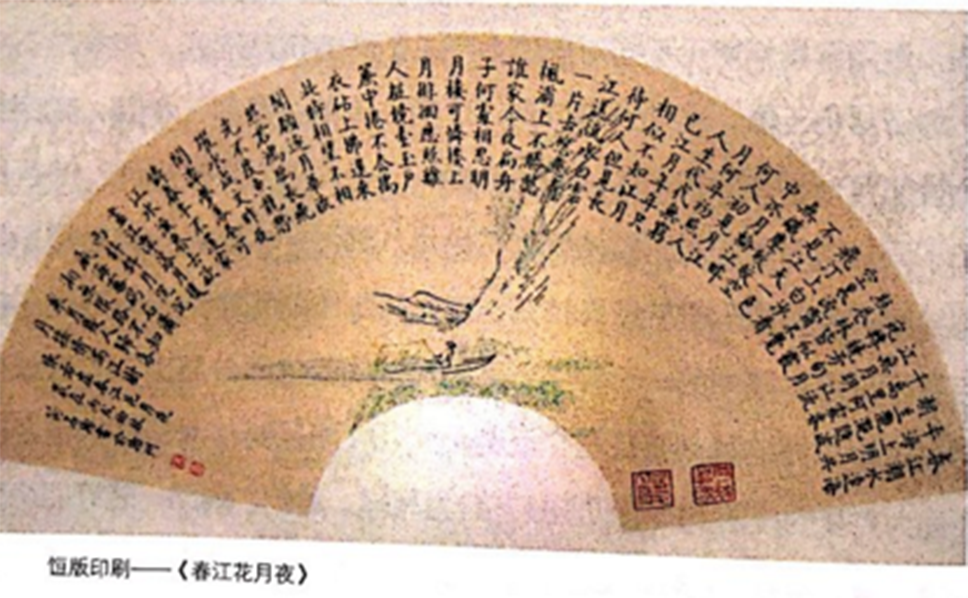

序
中国古老的文字刻印、捶拓技艺经过了一段漫长的演化发展时期。大
约到隋唐时期，应经济、文化和社会发展需求，中国人将记载和传承人们
思想文化的书本，由〝从一到一"的手工抄写变革为〝从一到多〞的雕版
印刷，形成了比较成熟的雕版印刷技术和行业。这是中国和世界印刷术的
起源，是一次技术革命，是一项创造发明，它对全人类思想文化的传播、
社会经济的发展产生了巨大影响。
中国雕版印刷是凝集着古代雕刻、制墨、摹拓、造纸等技术的结晶。
雕版印刷术的发明，改变了秦汉以前依靠〝竹简〞〝木牍〞记录文字、传
送文书的历史，雕版印刷技术很快被朝廷、地方和民间普遍采用。随着社
会政治、经济、文化发展的需求，雕版印刷业迅猛发展起来，并形成不同
地区不同风格的雕版印刷中心，唐五代的敦煌、西安、洛阳、扬州、成都、洪州；宋代的汴京、成都、杭州、眉山、吉安；元代的吐鲁番、大都、平阳、杭州、建宁；明代的北京、南京、苏州、徽州、常熟、建阳、杭州；清代的北京、扬州均留下了精美的古籍善本，显示出各地高超的雕版印刷技艺。其中，古代扬州交通便利、经济发达、社会繁荣，隋唐时期成为中国最大最有影响力的商业性城市，是中国雕版印刷的中心之一；隋唐以降，此地雕版印刷业生生不息，不断发展，到了清代，则成为皇家古籍雕版印刷基地，所刻印的《全唐诗》《全唐文》等书籍，品质高雅，得到康熙帝的高度赞扬，成为清代雕版印刷业的质量标准。

传统雕版印刷技艺流程极为复杂，从事雕版印刷业的技工也非常多，雕版
印刷机构从朝廷国办、地方官办到民间私办不计其数。清末民初，西方现代印刷术传入中国，古老的雕版印刷淡出社会，逐步退出历史舞台。作为我国优秀历史文化遗产，扬州广陵古籍刻印社与南京金陵刻经处、四川德格印经院联合申报非物质文化遗产。2006年雕版印刷技艺被国务院列入〝第一批国家级非物质文化遗产项目〞，2009年又被联合国科教文组织选入〝人类非物质文化遗产代表作名录〞。
扬州是我国保存传统雕版印刷技艺最完整、最有代表性的城市。早在新中
国成立初期，扬州市就将战乱失业流落于社会，曾从事过官刻、坊刻、私刻的雕版印刷工人组织起来，并收集了数十万片散落在民间的古籍版片，恢复了完整的古籍雕版印刷生产线，成立了扬州〝广陵古籍刻印社〞，专营古籍雕版印刷等业务。扬州广陵古籍刻印社采用雕版印刷的传统工艺，出版丁大量古籍线装书籍，不仅成为全国最大的线装书加工基地，而且也......